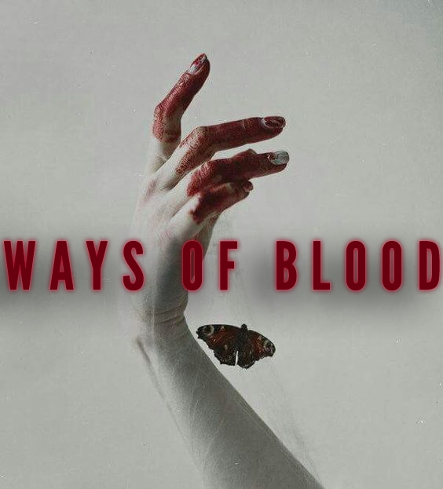
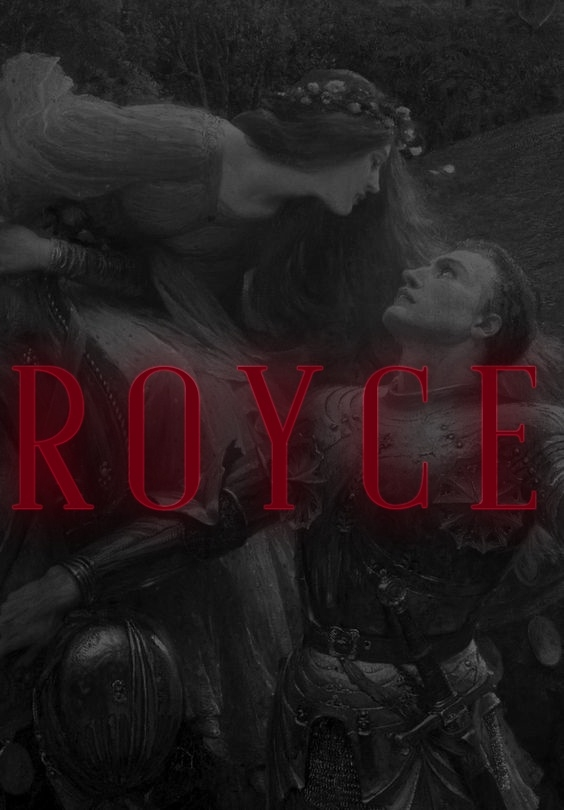
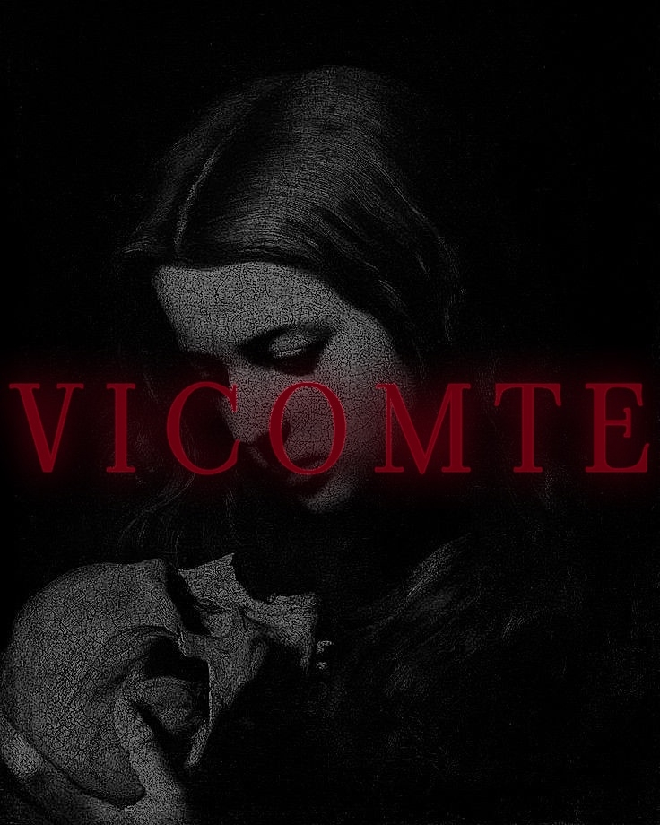
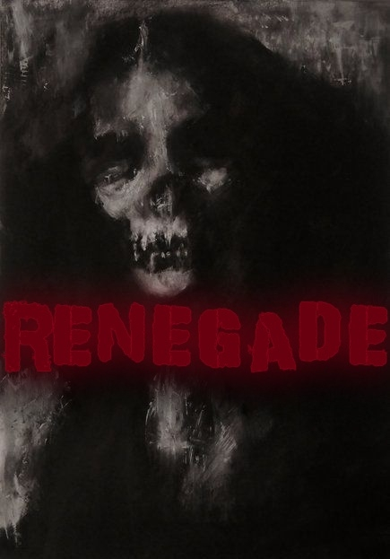
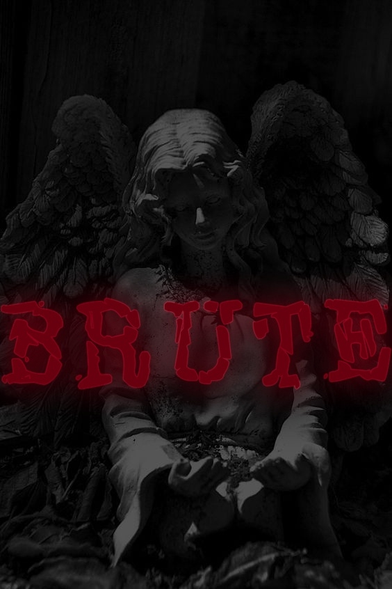
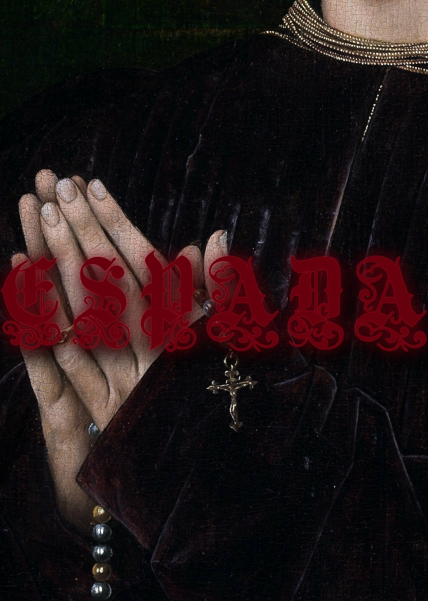
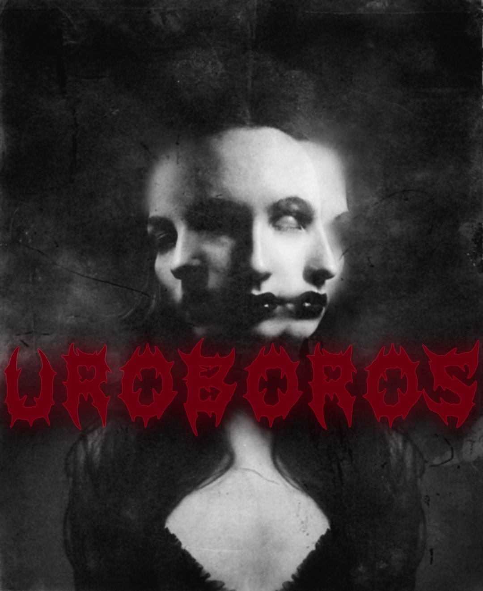

Homo Novus. Вампиры.
Оглавление:
- Введение
- Часть I: Раса Вампиров.
- — Питье крови и её значение;
- — Обращение;
- — Способы убить Вампира;
- — Подрасы Вампиров.
- Часть II: Политические фракции Вампиров, кланы и дисциплины.
- — Секты и кланы: Синдикат;
- — Основные кланы Синдиката;
- — Секты и кланы: Коммунары;
- — Основные кланы Коммунаров;
- — Секты и кланы: Длань Хаоса;
- — Основные кланы Хаоситов.
Введение
Литературные декадентские маньяки, грандиозно появляющиеся на фоне острых готических шпилей, восседающие на каменных горгульях, объявляющиеся перед людьми в момент громового раската. Трупы-кровососы, восставшие из могил, чтобы провести вечность во вкушении крови смертных. Обреченные на ад бессердечные чудища, избегающие наказания в междумирье и крадущие чужие жизни. Эмпатичные хищники, крадущие наивные души и манипулирующие доверчивыми женщинами и мужчинами.
С самых первых мифов можно проглядеть ту или иную итерацию Вампиров, независимо от того, как их называют. От Нью-Йорка до Лос-Анджелеса, от Лиссабона до Сахалина — люди познали ужасную дрожь от деяний бродящих в ночи существ. Из викторианской литературы, из комиксов, из смазливых драм с Робертом Паттинсоном в главной роли, из сериалов, мультфильмов. Но всё это же сплошной вымысел, да?
Нет.
Вампиры бродили среди нас ещё до того, как Лонгин проткнул тело Иисуса копьём и бродят среди нас до сих пор, манипулируя людьми подобно тряпичным куклам, параллельно ведя свою тайную войну с самых ранних ночей человеческой истории. Исход этой борьбы может определить будущее человечества — или его окончательную гибель.
Часть I: Раса Вампиров
Вампиры — кровососущая нежить и одна из рас, за которую Вам предлагается вступить на «Кровавый Троп».
В современную ночь термин «Вампир» используется исключительно как научное обозначение расы и как уничижительный термин, наравне с «Кровососами» и «Упырями» с уст охотников. Вампиры редко обращаются друг к другу подобным образом и среди современного общества распространено самоназвание «Сородич» среди Синдиката и Коммунаров. Среди изгоев-изуверов из «Длани Хаоса» более распространено обращение «Дети Валаама» или «Валаамиты», как Вампиров называли до Восстания Неонатов.
Каждый вампир по своему уникален, каждый вампир может поразить своей исключительной историей, но единственная
черта, которая всех их объединяет — их проклятие.
Вне зависимости от возраста, клана или политической фракции, каждый вампир есть неживой хищник. Рефлексия,
мораль, этика — всё это уходит на второй план перед неотвратимым голодом и бушующим внутри каждого кровососа
Зверем.
Зверь — за фальшивой цивилизованностью общества Вампиров существует негласная истина. Вампиры — чудовища, одержимые внутренним Зверем. Зверь вечно выжидает, вечно алчет, вечно жаждет крови и смерти. Как бы Вампиру не было омерзительно, он вынужден давать крупицу свободу своему Зверю когда убивает, питается и обнажает свои клыки.
Как и люди, Вампиры пересиливают свои низшие инстинкты и желания, но это не всегда получается. Когда Вампир звереет, от его бывшей, смертной натуры ничего не остаётся, он впадает в кратковременное или вечное неистовство, где живёт только для трёх вещей: убийства, питьё и сон.
Все Вампиры по сути своей паразиты, вынужденные охотиться на тех, кем они когда-то сами являлись. Независимо
от того, каких взглядов вампир придерживается и как жалко не цепляется за свою человечность, игнорируя зверя
и свои инстинкты — он неизлечимое чудовище, которое вынуждено делать чудовищные поступки.
При этом, из-за жестокости и мрачности сеттинга, стоит отметить, что раскрытие Вашего персонажа чаще всего
будет происходить через негативные или подавляемые черты характера.
Обескровленный труп ребенка приземляется спиной на груду мусора, навсегда забываясь на свалке из-за неосторожности молодого вампира, который не смог остановить себя во время кормёжки. От подушечек пальцев идут маленькие ниточки, присоединенные к головам ничего не подозревающих людей. Ваш Барон, символ надежды на выживание Сородичей может использовать безвыходное положение проклятых себе на руку, заставляя их быть оружием против своих врагов. В не-жизни смотришь на мир, как через кривое зеркало, а в сумраке никак нельзя определить, кто тебе друг, а кто враг.
Как видно, в попытках убежать от своей природы было создано общество Сородичей, существующее вне поля зрения смертных. Аспекты не-жизни, такие как: клан, политическая фракция, человечность, сир и дитя, Бароны и Баронессы — всё это попытки искусственно возвести стены, о которые может опираться Сородич, не чувствуя себя одиноким, а также чтобы убежать от Зверя. Вот так и живи: скрывайся не только от смертных, но и от себя же, притворяясь, что ты не такой страшный, каким являешься на самом деле
Питье крови и её значение.
Вампиры — живые трупы, имеющие потребность в крови живых. То, что вампир мёртв имеет прямой клинический характер. Они не дышат, их сердце не бьётся, у них невероятно бледная кожа и холодна она как склепный камень. Их органы не функционируют, а кровь они получают посредством осмоса. При этом всём вампир, чьё влияние Зверя не столь явно, а сам он близок к человечности — без проблем может имитировать жизнедеятельность организма. Заставить сердце биться, правдиво пародировать дыхание или заставить кожу обрести человеческое тепло может каждый, даже самый отдаленный от человечности вампир. В то же время вампир, который придерживается человеческой морали, умело балансирует на гранях не-жизни и эффективно глушит зверя может даже имитировать возбуждение и заниматься сексом, но не оплодотворять.
Кровь выступает не только как средство поддержания своего искусственного бессмертия, но и как источник силы Сородича. Все магические дисциплины так или иначе повязаны на крови и это касается не только заклинаний, но и осуществление процессов, благодаря которым вампир физически во всём превосходит человека. Регенерация, сверхчеловеческая сила, непоколебимая стойкость, чудовищная выносливость, улучшенная реакция и рефлексы исходят из запаса крови.
Но сила вампира зависит не только от запаса крови, но и его возраста. Чем старше вампир — тем он опытнее и сильнее, тем он лучше справляется со своей кровью и управляется с проклятьем. Молодой Вампир не может сразу обладать силой 10-ых людей, поднимать легковушки одной рукой и уклоняться от пуль, летящих на сверхзвуковой скорости. Вампир, которого едва-едва обратили будет ненамного сильнее обычного, физически развитого человека, но насытившись кровью — он на некоторое время обретет те самые сверхчеловеческие силы. Это же и касается заклинаний. Чем Вампир опытнее в делах обращения с собственной Яхве, тем страшнее его кудеса. Для вампира, который пересек порог в 1000 лет даже был придуман термин — Мафусаил. Порой Мафусаилы могут сравниться по своей физической и магической силе с выдуманными Дракулой или Лестатом.
Обращение.
Обращение в вампира в простонародье называют «Поцелуем» Если Вампир просто укусит другого человека за шею — то последний не станет Вампиром. Выпив крови — человек впадёт в короткий транс, выпадая из реальности, при этом не имея способности вспомнить, почему он чувствует себя так плохо. При всём этом на его шее не останется следов от клыков. Если же иссушить человека полностью — то он умрёт, но далеко не все вампиры так делают, так как убийства и оставление иссушенных трупов в обильном количестве может быть нарушением первого правила «Лицедейства». Чтобы обратить смертного в вампира — нужно полностью его иссушить, лишь затем дать немного своей крови и оставить валяться на несколько минут, после которых у новообращенного появятся выдвижные клыки.
Способы убить Вампира.
Вампиры имеют склонность к вечной жизни, но не бессмертию. Их можно убить, но процесс это крайне и крайне сложный. Во вселенной «Кровавого Тропа» к уничтожению Вампира подходят не самым типичным образом.
Вампира не пугают никакие священные реликвии или религиозная атрибутика, они не страшатся святой воды, на чеснок им плевать, как и на серебро, а кол , или арбалетный болт в сердце только их парализует, пока не будет извлечён.
Так чем же их бить?
Им всё ещё страшен естественный солнечный свет, они буквально в миг сгорают от него, не оставляя за собой даже горстки пепла. Им отвратителен огонь, который может их убить. Ожоги от огня же не только приносят боль, которую Вампир просто терпеть не может, но и дестабилизирует регенерацию вместе с магическими способностями, из-за чего охотники любят использовать зажигательные смеси и гранаты, а также, куда же без них, патроны с зажигательной пулей.
А ещё стоит поберечь свою голову от незапланированных пилюль картечи 12-го калибра. Мощный заряд картечи в упор снесёт твою головушку несмотря на то, какого ты там поколения и насколько близок к Валааму, как развил свою кровь и какими дисциплинами обладаешь.
Взрывчатка — проблема, как и избыточные раны. Вампиры отлично переносят запреградные травмы от кинетической энергии стрелкового оружия за счёт мёртвых органов, но сквозные раны и ранения, открывающие кровотечения в большом количестве могут заставить вампира терять кровь, свою живительную влагу и источник силы, из-за чего, помимо зажигательных патронов, охотники используют экспансивные пистолетные патроны, открывающие обильное кровотечение у Вампиров.
Если не давать вампиру регенерировать и наносить удар за ударом, то можно перегнать его способность к восстановлению и значительно ослабить. А если оторвать ногу или руку взрывом, то вампиру потребуется огромное количество времени, чтобы отрастить новую конечность, при этом мелкие ранения перестанут регенерировать.
Если же Вы обладаете простой человеческой силой, то не рекомендуется нападать на них с холодным оружием, ибо реакции даже самого молодого Вампира хватит, чтобы уклониться от всех ударов и перехватить инициативу в драке.
Вампир может обладать достаточной силой, чтобы переломать все кости и порвать все мышцы другого вампира, а затем свернуть шею, после чего наступит смерть, но зачастую даже простое сворачивание шеи также может послужить способом убить кровопийцу, хоть для этого и нужно сверхчеловеческое усилие.
Подрасы Вампиров.
«Подрасы» — сказано громко, так как все, кто будет перечислен — не совсем вампир, или Вампиры не совсем хотят говорить, что они являются их родственниками по расе.
«Прокаженные» — Бесклановые вампиры-бродяги и по совместительству самые гнусные и неуважаемые представители вампирского общества. Прокаженными называют вампиров, которые не знают о скрытом порядке общества Сородичей, а зачастую они даже свой клан не знают. Это опарыши, которые беспомощно дёргаются на и без того разлагающемся трупе цивилизации, обреченные ходить на ощупь в темноте и получать плевки в лицо, или смерть из-за своего существования. Они не попадают под защиту «Лицедейства» и «Синдиката», так как очень часто бывает, что прокаженные глубоко несчастны и безумны из-за плохого питания и одиночества. Но бывает и такое, что это просто потерянные вампиры, которых обратили и бросили на растерзание, а теперь они не знают куда податься.
«Упыри» — порой и люди хотят прикоснуться к завесе тайного мира Сородичей и зачастую
становятся рабами
жестоких кровососов. Порой вампиры насильно поют людей своей кровью, чтобы те обрели физическую зависимость
от крови и ментальную от вампира. Без крови своего Хозяина человек начинает ломаться, его силы угасают с
каждым днем и он не может жить без вампирской крови, входя вампиру в услужение. Достаточно двух порций
крови, чтобы человек навсегда связал себя и вампира, который, обычно, гоняет прирученного человека по всяким
мелочным делам, шпионил за определенными людьми, терся в определенных кругах.
Кровь Вампира даёт человеку не только губительную зависимость и узы рабства, но и сверхчеловеческие силы,
стойкость и замедленное старение. Грубо говоря, за свою службу Упыри получают малую часть от силы Вампира,
но никогда с ними не сравнятся.

Часть II: Политические фракции Вампиров, кланы и дисциплины.
Политическая Фракция Вампиров — в простонародье «Секта». Группы кланов Сородичей, которые разделяют сходную идеологию, цели и взгляды на «Лицедейство». Первые итерации сект появились после Восстания Неонатов, так как «Лицедейство» превратилось из свободного и негласного свода правил в табу и законы общества Сородичей, за нарушение которых укорачивали на голову.
Клан — родственные линии Сородичей, связанные проклятием. От клана зависит не только история и потенциальные ментальные изменения новообращенного, но и магические дисциплины, а также отношение к Вам других Сородичей, в зависимости от того, к какому Клану и Секте Вы принадлежите.
Вампирская Дисциплина — сверхъестественные способности, получаемые после обращения в вампира и доступные только этому виду. Есть как базовые дисциплины, которыми обладает каждый Сородич (повышенная стойкость, скорость реакции, значительное увеличение физической силы), так и магические, которые разнятся от клана к клану. Все Дисциплины объединены тем, что они используют кровь как ресурс. У всех вампиров (за исключением Уроборосов из-за бонуса клана) запас крови исчисляется в процентах и максимальное значение достигает 100%.
Секты и Кланы: Синдикат.
Синдикат — самая большая из ныне существующих Вампирских сект и правопреемник «Августинского
Ордена», который
был преобразован из скрытого Ордена Старейшин в мощную глобальную организацию, представляющая возможность
всем вампирам скрытно жить в современные ночи, являясь аналогом ООН для Сородичей. Полностью отождествляет
себя с «Лицедейством» и является ревностным сторонником его правил, трактуя их как законы, за нарушение
которых сохраняет за собой право на убийство непутёвого Сородича. Не чурается использовать и манипулировать
этими правилами, как инструментами удержания у власти старых вампиров-традиционалистов.
При всём этом наиболее эффективно интегрирует молодых Вампиров в общность Сородичей, даёт жильё, разбирается
с тем, чтобы прошлая личность новообращенного перестала существовать. Всё это — в обмен на послушание и
субординацию, а также приверженность к идеалам «Синдиката» и «Лицедейства». При этом продвигаться по
должностям в Синдикате крайне сложно и как это иронично, многие Бароны стали Баронами благодаря нарушению
или манипуляциями правилами «Лицедейства».
Быть может, тебе гарантируют безопасность, но не гарантируют то, что ты не станешь в руках верхушки
Синдиката обычной пешкой, так как руководство пользуется строгим принципом «Пирамиды власти» и предпочитает,
чтобы настоящая власть была у сильного меньшинства, на которое работает слепое большинство.
Падение «Августинского Ордена» было заметно ещё во времена Великой Французской Революции,
когда большинство
Сородичей, кроме самых консервативных и одурманенных правовым нигилизмом, увидели в «Лицедействе» угрозу для
самоопределения и свободы вампирского общества, таким образом, произошел отток значительной части Сородичей
к идеологическим врагам Ордена — «Коммунарам».
После поражения во Франции, Орден был вынужден покинуть западную и центральную Европу на 150 лет, после
которых уже вернулся в обличии «Синдиката», в который организация окончательно
преобразовалась после белой
эмиграции, причиной которой была октябрьская революция 1917-го года в России.
Броские титулы сменились на строгие должности. Лорд стал генеральным директором, центурион стал менеджером, эмиссар стал парламентером, сенешаль стал дознавателем и только Барон остался Бароном как дань уважения Ордену. Барон — самый высокий титул в «Синдикате», так как он, по сути, может игнорировать правила «Лицедейства» на своё усмотрение, но при этом обязан яростно следить за тем, чтобы Сородичи и их общество находилось в тайне, соблюдая эти самые правила. При всей своей многочисленности и могущественности «Синдикат» представляет из себя нестабильную форму парламентаризма, над которой бдят неизвестные вампиры из «Высшего Круга», о которых никто ничего не знает и которые сами назначают Баронов городов, предпочитая обращаться к Сородичам не напрямую, а через поручиков. Бароны считают, что каждый Вампир, вне зависимости от своего желания, уже является членом «Синдиката», а выданные им города находятся полностью в их владении.
Бонус за выбор Секты «Синдиката»: за легкие и средние грешки персонаж не теряет человечность и не приближает Бешенство, а также получает неплохую скидку на снаряжение и кровь в подпольных торговых точках, которые держит Синдикат, со старта имея к ним доступ.
Основные кланы «Синдиката»
Дополнительная ремарка: то, что эти кланы числятся «основными» , вовсе не значит, что в Синдикате могут быть исключительно Ройсы и Виконты, а в Коммунарах Ренегаты и Бруты. «Основные» кланы составляют костяк этого клана и определяют его облик в обществе вампиров, но при этом во всех сектах присутствуют Вампиры из всех кланов, представленных на выбор. Ройс могут быть в Коммунарах, как безупречные тактики. Бруты могут быть в Синдикате, как агенты Барона и т.д.
Клан Ройс.

Клан Ройс — номинальные лидеры «Синдиката», считающие, что они стояли у основания Ордена, они убедили упёртых Старейшин в надобности «Лицедейства», они преобразовали умирающий Орден в «Синдикат», снова начиная подчинять себе всю Европу после серии оглушительных идеологических поражений в войне за удержание Американских колоний, во Французской Революции и в Великой Пролетарской Революции.
Сородичи клана Ройс отождествляют из себя всё то, за что ненавидят капитализм: зажравшиеся
аристократы,
богатые политики, продажные бизнесмены, словом, все те, кто растягивает пропасть между социальными классами.
Несмотря на это, считают себя самыми благородными Сородичами, показательно соотнося к себе аристократические
анахронизмы и титулы.
Удивительно, но это самый малочисленный клан, находящийся в самой многочисленной секте, снова воплощая идею
о «Сильном меньшинстве». Сородичи этого клана при жизни были важными шишками в политике, носили помпезные
титулы графов и герцогинь, были потомственными аристократами. Ни один из них не был пешкой при жизни и не
стал ею при наступлении не-жизни. Адвокаты, судьи, спикеры, парламентарии, а теперь ещё и генеральные
директора, владельцы огромных благотворительных фондов и ушлые инвесторы. Имея практически неограниченные
ресурсы для воплощения своих интриг и политических игр — среди Ройсов чаще всего происходят акты вероломства
и заговоров против своих же.
Сила клана Ройс раскрывается не только в их идеальном положении в не-жизни и высокими должностями по праву рождения, но и влиянием на мир людей, который позволяет эффективно скрывать существование Сородичей. С помощью СМИ, связей в политике и упырей на важных государственных должностях, они могут без проблем тянуть за ниточки и манипулировать людским окружением и реальностью, выставляя многие эксцессы и демонстрацию сверхъестественного за обыденные людские вещи, по типу катастроф, несчастных случаев, обычных бандитских разборок и тому подобное.
Дисциплины Ройс: магия клана направлены на презентацию собственного превосходства, а также манипуляцию со смертными, без лишнего труда и привлечения внимания внушая им свои идеи, мысли и планы, заставляя думать, что они обязаны это исполнить. Причём вариации самые разные — чарующая привлекательность, влекущая харизма или холодные угрозы. Ройсы знамениты разнообразием способов подчинить людские сердца и умы, а что касается битвы — они уповают на то, что победят в ней ещё до её начала. Они способны заставить врага ошибаться, промахиваться, насмехаются над ним или молчаливо показывают собственное преимущество, от которого отказался их враг. Они способны внедрять в умы магических существ и людей поведенческие тенденции, которые заставят ошибиться противника в любом случае, давая идеальный шанс для атаки, сколь бы сильным оппонент ни был.
Бонус за выбор Клана Ройс — гарантированный успех при совершении 1-го среднего, или легкого по сложности социального действия при разговоре с НПC. Повышение шанса на успех при попытке совершить действие убеждения тяжёлой сложности. Можно активировать 1 раз за разговор.
Клан Виконт.

Клан Виконт — загадочный и полный тайн клан Сородичей, ориентированный на мастерское обращение с Вампирскими Дисциплинами и хранение их секретов от невежественных Сородичей, Охотников и ревностных Магов. Об этом клане не принято много говорить по двум причинам: либо Сородичи ничего не знают о клане, либо, напротив, знают что-то лишнее.
Рождение этого клана сама по себе одна большая загадка, которую не принято разгадывать в приличном обществе. Говорят, основателем Виконт был малый пророк Захария из Ветхого Завета, которого обратил в Вампира сам Валаам. Проблема крылась в том, что Захария был магом, близкий к открытию 10-го столпа, а по совместительству мастерски управлялся со столпом Жизни. Обращение Захарию в Вампира понесло первый значительный разлад между обществом магов и Сородичами, в будущем, лишь ухудшая эти отношения и спуская до состояния войны. Захария вместе с Валаамом смогли разгадать и обуздать проклятую кровь, сделали первые шаги в обуздании магии Яхве. Где-то в прошлом затерялась древняя реликвия — «15 глава книги Пророка Захарии», где описывается его не-жизнь после Обращения Валаамом. В ней же описаны все принципы работы Вампирских Дисциплин, но ныне этот принцип переносится из уста в уста от наставников клана Виконт. Если бы эта реликвия сохранилась — она была бы идеальным доказательством существования Валаама и Второго Поколения, но увы, существование этой главы такой же миф, как и сам Валаам.
Другая версия возникновения Виконт зовётся официально подтвержденной и трактуется, как обращение в вампиров нескольких магов-перебежчиков в V веке до н.э под покровительством первого Барона Лондона — Валериуса. Валериус, будучи из четвертого поколения, лично обратил нескольких магов в Сородичи, из-за чего нагнал на себя гнев других магов, с которыми у него завязалась длительная война, в которой тот потерпел поражение и впал в Торпор, но усилия магов не смогли помешать ренегатам основать собственный клан с собственной магией, вплетенной в реальность.
Валериус был из клана Ройс, обеспечил перебежчикам свою защиту от бывших братьев и сестер, из-за чего Виконт до сих пор благодарен Ройс и всегда были с ними на одной стороне истории, благодаря чему Ройс и Виконт — основной костяк «Синдиката»
Нынешние Виконт — замкнутый и закрытый клан Сородичей, к которому все относятся с опаской и сильным подозрением из-за неоднозначного происхождения, а также чрезмерно сильных Вампирских Дисциплин. Их бранят, им завидуют, им не доверяют, их боятся , но их никогда не получается игнорировать. Даже сами Ройс порой бывают озадачены тем, что Виконт может им не до конца доверять свои тайны, ибо так и есть. Маги Крови отказываются обучать кого-то своими уникальными дисциплинами кроме своих последователей, а если выясняется, что Дисциплинами пытается овладеть кто-то не из их клана — Виконты могут действовать наперекор «Лицедейству» и лично заняться нелегитимным вампиром. Они дополнили своё сильное чародейство не только идеальными познаниями в Яхве, но и ритуалами, сложными заклинаниями, сделав собственные Вампирские Дисциплины такими же сильными, как и Столпы. Эти способности, в сочетании с жесткой иерархией клана и присущей многим его членам затаенной амбициозностью, вселяют недоверие и тревогу в тех, кто знаком со способностями Виконтов. Из-за своего происхождения особо презираются магами, в особенности из-за того, что они сделали с магией и видя в Виконтах только «грязное» возникновение и осквернение Столпов.
Дисциплины Виконтов: кровь Виконтов обладает особыми качествами, которыми не обладает никакое другое Яхве. Они могут: лечить себя собственной кровью от ожогов, покрыть ею мышечный покров и заставить его менять собственную структуру, покрывая тело Вампира бронёй, а могут высвобождать собственную кровь для того, чтобы атаковать ею других существ. Они используют кровь не только как ресурс, но и как средство. Ничто не помешает Виконту пустить внутрь человека немного своей нестабильной крови, которая нагреет всю кровь внутри тела и заставит его тело взорваться. Кровь можно использовать для манипуляции процессами чужого организма, таким образом, вызвав тромбоз или даже сердечный приступ. Способов применения крови у этого клана крайне много и расписывать даже примерами — целое дело, но помимо нестандартного использования Яхве — Виконты могут придавать своей крови иные характеристики и формы, делая мечи из Яхве или даже кровавые гранаты.
Бонус за выбор Клана Виконт — на старте персонаж может иметь не 3, а 4 Вампирских Дисциплины, но дополнительная дисциплина обязана быть в виде слабой пассивной способности, которую, впрочем, в будущем можно развить до активной формы.
Секты и Кланы: Коммунары.
Вторая по популярности секта в мире современной ночи, рождённая после поражения Неонатов в восстании против старейшин и пересмотра собственных взглядов на то, насколько либерально может быть сокрытое сообщество Сородичей, вынужденное жить по правилам «Лицедейства». Коммунары — это вампиры, которые отвергают нынешнее положение «Лицедейства», как строгих правил, предпочитая в них видеть здравый смысл, завязанный на гражданском самосознании Сородича. Они отвергают диктатуру Баронов «Синдиката» над городами и «Высшего круга», который считают кучкой затхлых стариков со страшной властью, видимость которой они дают своим лизоблюдам-баронам.
Может показаться, что в современной ночи Коммунары живут вопреки Синдикату, отказываясь подчиняться диктату Баронов и Архиепископов «Длани Хаоса». Мировоззрение Коммунаров требует неограниченной свободы для всех, из-за чего прочие фракции называют их крайне наивными, и это неудивительно, так как коммунары в большинстве своём крайне молоды и неопытны. Встретить Коммунара, которому исполнилось хотя бы 300 лет — огромная удача.
Может показаться и то, что Коммунары представляют из себя золотую середину между упивающимися анархией монстрами из «Длани Хаоса» и деспотичными автократами из «Синдиката», пытаясь по принципу центризма вобрать всё жизнеспособное от обеих сект для устройства идеального общества вампиров. Как показывает опыт прожитых лет — нет. Коммунары — популисты в плохом смысле этого слова, думающие идеалами, завлекающие громкими речами и радикальной борьбой с такими угнетателями, как Синдикат, выступающий за вынужденную тиранию в обмен на возможность жить в этом мире.
Но чем же завлекают Коммунары, раз уж они представлены в большинстве своём недалёкими идеалистами? Ответ прост: в их способности добывать власть, несмотря на противодействие со стороны Баронов. Сами же Бароны нехотя признают их власть на выделенных им территориях. На фоне старых Баронов и древних Вампиров, Коммунары выделяются огромной целеустремленностью и страстью, чем не могут похвастаться старцы из Синдиката, редко высовывающие нос из своих бастионов.
На политической арене страшные поражения понесли не только Синдикат, но и Коммунары. После победы в войне за независимость США, общество Коммунаров там является чуть ли не сильнее местного общества Синдиката. Буржуазная революция во Франции впервые пошатнула положение вампирской аристократии в Европе, а после победы Коммунаров в свержении императорского режима в пролетарской революции 1917-го года, их положение в восточной Европе должно было быть неоспоримым…. Так оно и было, когда-то. Коммунары, будучи марксистами, разочаровались в советском режиме и после убийства Троцкого были вынуждены бежать вслед за теми, кого они прогнали. Дальше, они потерпели поражение в Испанской гражданской войне, после которой к власти пришли фашисты. Но мало того — из Западной Европы их, словно сообща, прогнали «Хаоситы» и «Синдикат», начиная двустороннюю жесткую борьбу без Коммунаров на этой арене. Когда в Европе укоренялись диктаторские режимы, большинство Коммунаров были вынуждены капитулировать в США или Британию, а в Европе осталась лишь малая горстка фанатичных борцов с деспотичными режимами.
Бонус за Выбор Секты «Коммунаров» — раз уж готов убивать других за свои взгляды, то и найдётся тот, кто за эти взгляды будет готов убить уже тебя. Коммунары выдерживают гораздо больше повреждений, что позволяет им тратить гораздо меньше крови на регенерацию легких и средних повреждений, а также, ценою большого количества крови, медленно регенерировать от ожогов.
Основные кланы «Коммунаров»
Клан Ренегат.

Клан Ренегат— уже со своего названия говорит о сущности Сородичей этого клана, но так уж получилось, что один из детей Валаама носил имя Ренегат. Смутьяны и агитаторы в настоящем, раньше этот клан считался главными иконоборцами общества Сородичей, ответственные не только за оказания сопротивление Старейшинам, но и за то, что во главе Восстания Неонатов в основном находились Ренегаты. Они ненавидят Ройсов, так как их основатель убил Ренегата, из-за чего весь клан впал в неизбежный упадок. Сейчас их воспринимают как испорченных детей, у которых не осталось ничего от их гордости и истории. Ныне Клан представляет из себя целую ораву бунтарей, идейных и неидейных, но всегда способных действовать самыми радикальными методами.
«Бросаться на каждого, кто тебе противостоит» — универсальная истина, которую учли Ренегаты из-за своего непростого и опозоренного прошлого, сопряженного с их ролью в истории Вампиров. Их основатель Ренегат был убит собственным братом Ройсом из-за сомнения в догматах отца Валаама. Они главные зачинщики Восстания Неонатов, они ответственны за многие победные революции над плутократией, но от этой репутации и страдают больше всего в современные ночи, воспринимаясь, как отщепенцы-панки мира Сородичей.
Клан состоит из бывших бунтарей разного разлива: революционеры, анархисты, участники тайных сообществ, парижские повстанцы, а также просто благородные разбойники и справедливые бандиты.
Они не способны к изяществу, с которым протекает битва за власть в Лондоне, больше походя на манёвры адвокатов и политиков, лишаясь любой инициативы в своих ходах.
Пушки утихли, ветер не разрывает от взмахов клинка, им крайне трудно вести борьбу с их главными конкурентами из «Синдиката» традиционными путями. Их стезя — битвы, переполненные первозданной яростью. Под надзором ангелов из камня, нынешние Ренегаты неистово дерутся на улицах «неправильного Лондона». Они крушат черепа в бандитском Ист-Энде, заполняя его узкие переулки реками крови, выливающиеся на главную улицу. Современных Ренегатов представляют как панков в тяжёлых кожаных куртках, как изгоев в байкерских прикидах, в тяжёлых военных сапогах и с неухоженной, сальной шевелюрой, неся на плече дробовик. За любовь к вызывающе-грязным нарядам и получили прозвище «Сброд» в Лондоне.
Они яростно противостоят современному укладу, пробуя «Лицедейство» на прочность и выводя из себя засевших в
своих бастионах Баронов. Но самый огромный за ними грешок — отношение к правилам, даже несмотря на то, что
они вроде как уважают их и считают здравым смыслом. Это не мешает им безответственно плодить Прокаженных и
спустя рукава обучать новеньких Ренегатов, так как они не чувствуют за них ответственность. Они не ценят
правило территории, считая, что могут делать что угодно, где угодно и только плохо скрываемый страх перед
Ройсами и загадочными Виконтами останавливает их от наплевательского отношения к «Лицедейству», как
инструмент монополии на власть и могущества стариков в Синдикате.
Их главная цель — вытеснить баронство и Синдикат прочь из Лондона, освобождая столичных Сородичей от гнёта
стариков из «Высшего Круга».
Дисциплины Ренегатов: в большинстве своём магия Яхве Ренегатов направлена на усиление физиологической и моторной стороны их тела. Сородичей, которые помогают им выдерживать самые длительные бои, наносить самые больные удары, выносить самые чудовищные раны и усиливать себя с каждым мгновением битвы. Они способны бить кулаками так сильно, что благодаря кинетическому воздействию пробивают самую толстую броню, кожу и кости. Их регенерация усиливается с каждым новым ранением, запах вытекающей крови из них или из врагов делает быстрее и ловчее. Благодаря особой комплексной дисциплине, которая за небольшое количество крови помогает обрести огромную физическую силу, скорость и ловкость, даже молодые Ренегаты представляют огромную опасность для Сородичей, которые решили перейти им дорогу.
Бонус за выбор Клана Ренегат — при битве с НПС имеется возможность совершить 1 удар легкой или средней тяжести с гарантированным успехом. Также, возможно повысить шанс на успех специального удара, который может дать преимущество в бою и открыть противника или избежать его атаки. Можно использовать 1 раз за бой.
Клан Брут.

Клан Брут — Сородичи этого клана происходят от самого нелюдимого и таинственного дитя Валаама — Брута. Он положил целую жизнь и не-жизнь на то, чтобы разработать систему, при которой можно будет узнавать о людях как можно больше, при этом появляясь у них на глазах как можно меньше. Ходят слухи, что Брут до обращения был тайным визирем и фаворитом Вавилонского царя в период «Вавилонского Плена», где его обратил Валаам. Брут является единственным из сыновей Валаама, который, по слухам, самостоятельно придумал первое правило «Лицедейства» — сокрытие.
Невидимые наблюдатели и дотошные детективы, они получили противоречивую репутацию в современной ночи, так как Сородичи-Бруты никогда не держатся долго на виду, но при этом знают о других Сородичах то, что может их компрометировать в глазах вампирского общества , заставляя других Сородичей бояться их и идти к ним же за информацией, которую они невесть как добывают.
«Те, кто имеют власть на виду – цели для тех, кто хотят ее захватить.» — неписанный слоган этого клана,
который никогда не обнажает перед другими не то что свою иерархию, а даже своих Сородичей, если в этом нет
необходимости.
Среди Брутов найдёшь единицы тех, кто публично оставил свой след в истории, но при этом влияние этого клана
на современное общество Вампиров неоспоримо. При жизни они были хакерами, мафиози, торговцами информацией,
частными детективами, дознавателями, незримыми линчевателями и агентами тайных служб при Королях и
Императорах. Основа этого клана составлена из тех, кто добывает власть, получает её, но никогда не
показывает её публично, ибо власть Бруты рассматривают не как ресурс или средство, а как хитрую игру.
Овладевая тайнами власти и правилами игры, они привыкли не сидеть на троне, а скрываться за ним.
Самым знаменитым Брутом, без сомнения, является узник «Железная Маска», который принёс победу Коммунарам во французской буржуазной революции и позволил достигнуть успеха в штурме Бастилии. Разнесли по устам его имя не сами Бруты, ибо они не любят бахвалиться, а Ренегаты, с которыми им приходилось кооперироваться. При этом доколе неизвестно, «Железная Маска» — один Сородич или это номинальное название и ширма для агентурной сети из нескольких Вампиров-Коммунаров? Ответа на этот вопрос знают только Бруты, очень бережно относящиеся к своей истории и к кровным узам. Бруты очень редко контактируют с Сородичами из других кланов, не считая своего, что выработало в них сильное чувство братства.
Брут никогда не будет разговаривать с Ройс, Ренегатом или Эспадой так, как он разговаривает со своими соклановцами, а если и будет — то это можно считать за воплощение добычи нужной информации из Сородича. Среди них никогда не случается актов предательства, они не врут друг-другу, не ведут против своих Сородичей интриги и скрытые игры, при этом каждый Брут готов умереть друг за друга, безвозмездно помочь и позволить организовать побег от очередных Сородичей, которые решили поймать гонца Брутов.
В современной ночи прославились тем, что могут достать какую угодно информацию и какой угодно товар. Их
агентурные сети незримы, протекают словно меж пальцев Барона «Синдиката», имея практически такое же
воздействие на мир людей, как и Ройс, но только способы у них иные.
Ройсы будут уговаривать и пользоваться дипломатией, а Бруты отправят на «мыло» интересный файлик с
компроматом и угрозами. Ренегаты устроят серию потасовок и убийств в целях получить то, что им нужно, а
Бруты будут изящно лавировать между тенями, красться незаметно на закрытые объекты, самостоятельно красть
необходимое, незаметно исчезая.
Брут будет идеально ориентироваться во времени, в котором живёт и пользоваться всеми его благами независимо от того, насколько он стар. Мафусаилы Ройс считают, что электричество — кудеса, придуманные смертными, а телефоны — исчадие Хаоситов, призванные пленить Сородичей. Бруты же в большинстве своём отлично управляются с любой техникой и технологией, им очень хорошо даётся теория и даже обладая только ей, они могут преуспеть в практическом применении знания с первого раза.
Из всех Сородичей — самые рациональные, в чём выражается их нелюбовь к глупому театральному фарсу и пафосу Ройс, корчащих из себя картинных аристократов и они с трудом мирятся, что они борются за сохранение последних крупиц свободы от тирании «Синдиката» вместе с Ренегатами, чьи возможности и нрав они ценят, но уничижительно относятся к их наивности и склонности к радикализму во всём. Нередко бывает, что перед тем, как нападать на какой-то объект на территории Синдиката, Бруты составят план для Ренегатов.
Стоит уделить несколько строк их отношению к «Лицедейству». Они полностью за все перечисленные правила во всех изначальных их трактовках, но в отличии от Ренегатов или Ройсов — они находятся где-то посередине этих кланов в своём отношении к «Лицедейству». Они против того, чтобы эти правила служили средством удержания власти стариков в Синдикате, но и не оценивают подход Коммунаров как раз из-за того, что они подают правильный подход к правилам, но на практике отвратительно исполняют. В любом случае, Брут из двух зол выбирают то, которое легче контролировать.
Дисциплины Брутов: сила их крови полностью соответствует основателю этого клана. Бруты могут стать не только невидимыми и беззвучно красться под носом у кого угодно, но и выстраивать правдоподобные иллюзии, искажать восприятие реальности у людей и других сверхъестественных существ. Дело даже не в просто иллюзиях, а в галлюцинациях, в которые человек точно поверит из-за того, что галлюцинации обычно посылаются в мозг с поведенческими тенденциями, из-за чего Дисциплины Брутов относительно схожи с Дисциплинами Ройс. Также они могут использовать свою силу крови для увеличения интеллектуальных способностей, дабы пришедшие пару минут назад теоретические знания воплотились на практике без единой ошибки. Этими дисциплинами они могут безошибочно выполнять те или иные действия на идеальном уровне, полностью исключая погрешности, успевая сохранить те миллисекунды, стоящие между жизнью и смерти. Особенно это полезно в использовании огнестрела, запоминанию карт здания и прокладывания дальнейших путей для скрытого передвижения.
Бонус за выбор Клана Брут — при выполнении 1-го действия скрытого характера, по типу подкрадывания, незаметного передвижения или кражи, персонаж имеет возможность гарантированного успеха при выполнении этого действия легкой или средней сложности.
Секты и Кланы: Длань Хаоса.
Уже наслышаны о том, что некие «Хаоситы» — главная угроза нынешнему скрытому порядку правил в жизни Вампиров? О том, что эти чудовища оставляют за собой лишь выжженные земли, они пьют кровь друг друга в инфернальных кутежах, используют ритуалы жертвоприношений и гадают по сотням вырванных сердец? Быть может, вы и слышали о том, как они обычно обращают смертных в Вампиров, просто вырубая их ударом лопаты, сливая с них кровь, давая им Яхве, а затем закапывая под землёй, чтобы им приходилось самостоятельно «восставать из могилы»?
Всё это — в какой то мере правда, но это не делает их однозначным злом и максимально шаблонными вампирами, которые просто хотят захватить мир, лишь бы он был у их ног. Дело в том, что Длань Хаоса вынуждена так поступать, так как иного способа спасти Вампирский род просто нет. Да-да, Хаоситы не злодеи и едва ли не единственные, кто озабочен не сколько возвращению вампиров на самый шпиль горы господства, сколько просто хотят спасти свой род от надвигающегося судного дня, когда чудовища больше не смогу упиваться в своих проклятиях и скрываться от задержавшегося Божьего суда за грехи Валаама. Как легко догадаться, они основные носители взглядов в истинность существования Отца Вампиров, Второго Поколения и Судного Дня, с которым предстоит встретиться совсем скоро.
Самая малочисленная, но опасная фракция в мире современной ночи, которая была рождена после поражения в Восстании Неонатов. «Длань Хаоса» не просто вампиры, которые ушли в подполье после нанесения им поражения от Старейшин, а двойка самых высших кланов Вампиров, которые никогда не отождествляли себя с человечностью, никогда не потакали морали скота, которым кормятся и никогда не предавали свою истинную сущность. Когда они упустили свой шанс после поражения Неонатов, они считают, что все Дети Валаама вне «Длани Хаоса» обрекли себя на еретические учения, принимая человечность и свод законов, обязующих их скрываться от стада людей. Сородичей этой Секты приводит в ярость одна лишь мысль о том, что Вампир, высшее существо, может применить к себе мораль тех, кого он ест, тех, кто должен бояться Вампира и выслуживаться перед ним, если он стремится сохранить свою жалкую и короткую жизнь. Принятие человеческой морали, ведение скрытого образа жизни прочь от глаз людей, прятки в городах, а теперь ещё и появление Вампиров со слабой кровью — всё это Хаоситы считают признаками надвигающегося конца, который они должны предотвратить, вернув Валаамитам первозданный вид хозяина-хищника. У них истинно благие цели, для достижения которых они используют самые кровавые и безнравственные методы. Их главная цель — уничтожение главных врагов в лице «Синдиката» и «Высшего Круга», которое даст началу свободному разрушению правил «Лицедейства», за которым уже последует долгая и мучительная война на пленение человечества и уничтожение других сверхъестественных рас.
Длань Хаоса при этом всё равно является мрачной и кровожадной сектой из-за альтернативной морали, которая следует из противоположности человечности. Хаоситам выгодно, чтобы Дети Валаама в их рядах не обладали человечностью, ибо «Кровавый Троп» этих Вампиров заключается в постоянной бойне и нуждается в том, чтобы уже с момента первых мгновений в шкуре Вампира, Валаамит не брезгал стоять по колено в трупах, купаться в крови и ловить эйфорию от звука лопающегося человеческого черепа в их руках. Людей, как легко понять, они воспринимают не более, как скот и развлечение.
В глазах других «Длань Хаоса» — вырождение самого дьявола, безумные дикари и кровожадные монстры. Во многом это сопряжено с тем, что каждый Хаосит исповедует учение, близкое к социал-дарвинизму, при котором они доказали безальтернативность власти Вампиров и их исключительность в мире современной ночи. Многие в Секте поверхностно доказывают этот догмат через насилие, но внутри все глубоко уверены, что это учения является не пустым превосходством, а единственным способом как можно быстрее подготовить Вампиров к спасению от Божьего Суда, который вот-вот случится.
Явление последних ночей, а именно вампиры со слабой кровью, заставляют некоторых Сородичей Синдиката поверить в предначертанный судный день, из-за чего те становятся перебежчиками. Коммунары и Синдикат неоднократно теряли свои котерии , которые обращались в Стаи Хаоситов, так как те принимали нечеловеческую мораль «Длани Хаоса», как спасение.
Как пример подобных перебежчиков — Ройсы бегут в Длань Хаоса, чтобы исправить грехи своих Старейшин. В то время, как Ройсы Синдиката являются влиятельными финансистами и корпоративными принцами, Ройсы Хаоситы – это рыцари и паладины, дающие клятву на своём Тропе поддерживать Длань Хаоса ценой не-жизни и искупить вину за чрезмерную алчность своих предков. Они поклялись на своём «Кровавом Тропе», что пройдут его с доблестью аристократов давно минувших ночей.
И таких далеко не единицы. Виконты, маги-ренегаты в начале своей истории, а теперь перебежчики, передающие явлению дьявола самые сакральные секреты магии крови. Уставшие скрывать свою истинную природу Ренегаты, ударная основа Стай Хаоситов, которые учиняют насилие для расшатывания правил «Лицедейства».
Как раз таки о расшатывании правил и стоит поговорить. Как известно, Вампиры — параноики. Как только встаёт проблема, Барон может не спешить с её решением, но вот паранойя о раскрытии «Лицедейства» обязует его послать своего человека или целую Котерию Сородичей на решение этой проблемы. Кто-то подкинул пакет с вампирской кровью в больницу? Кто-то заимел фотографию того, как чрезмерно бледный Господин очень странно целует в шею человека в ночном клубе? Кто-то разворовывает могилы? Стоит послать своих Вампиров… которых подловят Хаоситы и снимут с них шкуру, сольют с них кровь, ударят по виску лопатой и заставят принять нечеловеческую мораль под неостановимыми и страшными муками, которые могут принести эти изверги даже несмотря на то, что ты бессмертный и алчущий крови монстр. Любая робкая интрижка «Синдиката» и преступления «Коммунаров» меркнет на фоне истинно страшных зверств «Длани Хаоса»
Мало кто знает о внутреннем порядке Длани Хаоса, особенно те, кто не является её участником. Синдикат и Коммунары сомневаются в том, что внутреннее правление вообще есть из-за вызывающе отвратительной оболочки этой Секты и представляют себе внутренний круг Хаоситов, как кучку просвещенных изуверов из Вампирского духовенства, которые устраивают кровавые ритуалы. Это мнение не так далеко от истинного, разве что внутренний круг Длани Хаоса по удивлению похож на высшие круги Синдиката за исключением того, что среди Хаоситов отсутствует система должностного подчинения. Даже Епископ, глава Длани Хаоса по городу, не может приказывать, а может лишь убедительно попросить, иначе он вывернет всей стае тела наизнанку. Свобода тут построена по принципу жесткого индивидуализма и силы. В то же время абсолютно любой, кто сомневается в силе и компетентности лидера Стаи или даже Епископа, может вызвать их на дуэль, при победе в которой может занять должность проигравшего и выпить его кровь, а если проиграет, то станет кормёжкой для своих братьев и сестёр по проклятию. Достоинство внутреннего порядка Длани Хаоса в том, что в этой организации крайне важны твои личные заслуги и дела, которые ты наворотил на «Кровавом Тропе», в то время как в том же Синдикате едва ли не больше роль играет твоё происхождение, статус Сира и насколько легко верхушке будет тебя сломать и манипулировать тобой.
Они не соблюдают «Лицедейство» или сами так предпочитают думать. «Лицедейство» — для трусливого Синдиката, пресмыкающегося перед людьми. Для Хаоситов свои порядки — «Кровавый Троп» , как основной свод правил неприкосновенности каждого Хаосита, вольного делать, что он хочет, но при этом он обязан сохранять верность Тропу, который выведет Детей Валаама из под взора мстительного Яхве. Существует и «Алая Немота» — правило, которое почти тождественно первому правилу «Лицедейства» с тем лишь исключением, что это вынужденная для Хаоситов мера. После того, как их Стаи вырезали во Французском Алжире смертные охотники, Архиепископы были вынуждены ввести ограничение на публичную демонстрацию даров Валаама, а с появлением спутникового наблюдения, видеокамер и средств моментального выкладывания информации в глобальную сеть, правило Алой Немоты было увеличено и за его нарушение так же наказывали, хоть и не так сурово, как это делают в Синдикате с «Сокрытием».
Бонус за Выбор Секты «Хаоситов» —кровь кипит, людские тела падают подобно тряпичным куклам, под ноздрями веет сладким запахом учинённой смерти. Осушив человека полностью, персонаж имеет возможность усилить эффект одной из своих активных дисциплин ценой большего количества затраченной крови или наоборот, сократить её трату вдвое на 1 применение. Усиление можно активировать на протяжении 5 ходов после кормёжки, после которого усилить дисциплину уже не имеется возможным. Усиленную дисциплину можно применить только на НПС.
Основные кланы «Хаоситов»
Клан Эспада.

Преобладающий в «Длани Хаоса» клан, не дающий развалиться этой секте, в которую они принесли кровавые ритуалы, иерархию и жестокие традиции индивидуализма. Эспада — мастера теней и тьмы, безусловные лидеры Хаоситов, пускающие в ход как дипломатию, так и силу. В прошлом были благородным кланом, который развивал и управлял людским духовенством в Европе, но поражение в Восстании Неонатов заставило клан повернуться спиной к своему наследию, полностью отдаваясь проклятию бытия Вампиром. Падшие аристократы, без которых невозможно вообразить существование «Длани Хаоса».
Были ли Эспада прокляты с самого начала или они сами избрали такой Кровавый Троп — вопрос исторический и философский одновременно. Единственная дочь Валаама — Эспада, отдалась в лапы проклятию явственнее всего на фоне своих братьев, пытающиеся заставить проклятие совладать с их остатками человечности. Даже мифы и легенды не дают однозначного ответа о судьбе Эспады, высокопарно переведя любую неубедительную интерпретацию в итог — Эспаду превратили в каменную статую, которая навеки вечные была обречена плакать кровавыми слезами, будучи в заточении. Дальнейшая судьба Эспады, где находится её статуя, кто обратил Эспаду в камень, кого она так разгневала, сделал ли это её отец, братья или злые маги, пораженные отдаленностью Эспады от человечности — вопросы, на которые нет ответа даже сегодня.
История же клана Эспада увенчана благородством и уважением, считаясь первым аристократичным кланом, в то
время как Ройсы были Паладинами и Воинами, соблюдающими постулаты вампирского рыцарства, лишь затем
перенимая форму принцев и принцесс вампирского мира, кои титулы не признаются за современными Эспада,
считающими Ройсов как своими главными конкурентами, так и главным позором нынешнего общества Детей
Валаама.
В современные ночи любое уважение и благородие в рядах этого клана превратились в мрачную пародию на них.
Тьма и тысячелетие распутывания интриг сделали вампиров этого клана развращенными и консервативными
лидерами. Они не ненавидели людей, а наоборот, давали им духовную кормёжку в виде Католического
Христианства, в развитие которого вкладывались больше всего, так как видели в религии лучший способ
манипуляции людьми. Продажное папство позволяло вампирам наиболее эффективно влиять на стадо и адаптировать
людской скот под свои прихоти. Это и отличает Эспада от их союзного по «Длани Хаоса» клана Уроборос. Тем,
что они не стремятся отрицать всё человеческое, а к тому, чтобы приспосабливать его для своего удовольствия.
Лишаясь милости небес после Восстания Неонатов, Эспада привнесли в «Длань Хаоса» упомянутые ритуалы, которые являются издевательской насмешкой над религиозными церемониями и постулатами христианства. Они управляют «Дланью Хаоса» и командуют их боевыми Стаями, определяют иерархию и кидают на врага целые ударные легионы Хаоситов, превращая Длань в безудержную силу, обрушивающаяся на своих врагов подобно кровавой волне. Убийство и неистовство — часть естественного существования хищника, так зачем бояться этих вещей, если это всего лишь значит быть вампиром?
При жизни Эспада были людьми, прежде всего, связанные с политикой. Они хорошо образованы, агрессивны как в физическом, так и социальном плане, всегда прибирают к рукам то, что их либо по праву, либо по мнению. Они могли быть членами радикальных партий, нечистыми на руку политиками, охмуренными властью представителями законов, избалованными детьми олигархов, жадными и меркантильными бизнесменами или мафиози из высшей прослойки организации. Не терпят неуважения, грубого тона или плохих манер, так как считают себя утончёнными чудовищами. Не стесняются выбраковываться от слабых Валаамитов, показывая всем, что слабакам в их клане не место.
Разработав собственную Дисциплину манипуляции над тьмой, они полагают, что их тьма — воплощение души вампира и подтверждение того, что Господь отвернулся от них. До того, как Эспада замечали намёки на скорый конец света, их задачей было воплощение идеального мира и покорение человечества для построения порядка с помощью «Длани Хаоса». После же объявления Вампиров со слабой кровью с середины 20-го века, стали видеть в этом первые зачатки конца света и приближение судного дня, которому они должны противиться вместе со всеми другими Детьми Валаама, спасая их от божьего суда, так что в какой-то мере имеют не такие тёмные намерения для захвата мира, какими они могут показаться на первый взгляд.
Естественно, это не отменяет того, что они должны проносить в умы вампиров безнравственные воззрения. Удивительно, но еретические и аморальные доктрины распространены в клане не повсеместно, но многие новообращённые Хаоситы из клана Эспада наслаждаются беспричинными зверствами и низменной развращённостью.
Довольно много Эспад наделены даром манипулирования и способностью к лидерству, проявляющиеся как со стороны дипломатии, так и со стороны учинения болезненных травм в пытках. Их величие вкупе со значимостью личных достижений и качеств среди Хаоситов позволили многим старшим Эспада быть на самых высоких постах в «Длани Хаоса, безупречно управляясь с гневом и первобытной яростью более молодых Валаамитов. Не в последнюю очередь контактируют с миром людей, хоть и делают это заметно реже , чем те же Ройс, ибо контактировать со скотом и просить его о какой-либо услуге — позорное холуйство, так что их коварные и целеустремленные натуры чаще всего просто берут то, что по их мнению им положено. С этим тёмными величием повязана свойственная этому клану гордыня. Очень немногие Эспада признают других вампиров равными себе и тем более не найдёшь Эспаду, которая будет считать кого-то выше себя.
Дисциплины Эспада: собственностью клана является уникальная, на уровне с дисциплинами Виконт, дисциплина тьмы и тени. Можно абстрактно сказать , что это дисциплина позволяет управлять самой тьмой, но с этого мы ничего не возымеем. Конкретная природа дисциплины тьмы и тени остаётся неизвестной и спорной, но во избегании изложения полемики об этом, просто стоит сказать, что «Тьмой» называют воплощение души Вампира из клана Эспада и позволяет управлять субстанцией, из которой она состоит. Эффекты этой дисциплины наводят настоящий ужас. Волны окутывающей тьмы, через которую могут смотреть только Вампиры клана Эспада, смывая своих жертв, подобно дьявольскому приливу. Дисциплина Тьмы и Тени считается не только одной из самых страшной, но и одним из качеств принадлежности к Длани Хаоса, из-за чего Эспада, принадлежащие Синдикату или Коммунарам, стоит осторожно практиковать эту дисциплину, или вообще отказаться от неё.
Конкретные примеры дисциплины так же нужны: присутствует заклинание «Ночная Изморозь», нагоняющая на пространство угольно-чёрное облако дыма, полностью поглощающее свет и отчасти даже звук. Оказавшись внутри, можно обнаружить, что облако крайне вязкое, лишает сил, а так же затрудняет дыхание тем, кому необходим воздух.
Существует и простенькая игра теней. «Простенькая» она лишь на словах, потому что грамотно манипулировать тенями может только Эспада. Это ограниченная власть над тенью и видами окружающей темноты вокруг. Эспада может создавать тьму, но не может создать тень, при этом имея возможность растягивать и изменять уже существующие тени, создавая обрывки тьмы там, где того захочется.
Бывают и более экзотичные и редкие итерации искусства тьмы и тени. В былые времена были архиепископы Длани Хаоса из этого клана, которые могли застелить небеса и само солнце угольно-чёрным покровом, позволяя себе ходить в дневное время, или изгонять кого-то угодно в абстрактную «бездну» — воплощение души Вампира в виде пространства, в которую Эспада может засунуть душу врага и из которой он невесть как выберется.
Бонус за выбор клана Эспада: Вампиры этого клана видят то, что другим недоступно. 1 раз за бой персонаж может узнать о части 1-ой способности его врага, а насколько ценной будет информация — неизвестно. Время перезарядки, принцип действия, способ избежать опасности — что-то из этого или часть этого узнает персонаж, стоит ему захотеть. Работает только на НПС.
Клан Уроборос.

Если кто и понимает всю прелесть отказа от человечности и ведения жизни в качестве вампиров, так это клан извергов Уроборос, настолько преисполненные в своих зверствах, что каждая стоит за гранью человеческого и вампирского понимания. Ходит ужасная молва об этих «изуверах» — прозвище этого клана, сходящее с дрожащих губ представителей других кланов, порой даже тех, которые состоят с Уроборосами в одной секте. Как никто другой, эти Валаамиты способны показать, что будь ты устрашающей нежитью, даже ты можешь испытывать первозданный страх.
Они достигли значительных успехов в своей особой дисциплине изменчивости, позволяя использовать плоть подобно глине для лепки… Причём это касается как их собственной плоти, клепая и перестраивая свои тела исходя из ужасающе прекрасных соображений о красоте, наполняя их чужеродными формами, от которых веет изяществом и страхом, так и относится к чужой плоти. Они способны оставлять в сознании жертву, с несовместимые с жизнью травмами и наносимыми по капризу повреждениями, пробуя на телах омерзительные эксперименты и пытки, отточенные сверх прочностей человеческого и вампирского понимания выдержки.
«Из двух зол выбирай то, что сильнее» — давняя поговорка, принадлежащая основателю клана Уроборос. Неизвестно, какое имя он носил на самом деле, но во многих трудах историков Валаамитов он фигурирует под двумя именами: «Изверг» и «Уроборос». Не любя броский китч, представители этого клана выбрали второе, ибо звучит оно величественно и монолитно, сразу позволяя представить нечто не то что далекое, а никогда не принадлежавшее человеческому. При этом внутренне гордятся за свой неофициальный титул и внутренняя сдержанность с лихвою компенсируется полётом фантазий, когда Уроборос малюет ножом, когтями, мечом или молотком по чужой плоти. Ломая скорлупу смертных тел, они сплетают кости, плетут плоть и шнуруют сухожилия до тех пор, пока не достигнут идеала.
Так как изверги прежде всего известны как за свою удивительную сдержанность, образованность и вежливость, избегая всякого пижонства, кроме как в своих изуверских рвениях, наиболее стоит уточнить об их утонченной красоте. Большинство молодых Уроборосов стремятся овладеть своим личным представлением об идеале красоте, они крайне часто меняют облик, выглядя то пленительно великолепно, то нелепо, то настолько устрашающе, что от страха даже Вампир схватится за сердце. Уроборосы постарше предпочитают безупречную симметричность, больше всего уделяя вниманию лицу о голове, напоминающие идеальные маски. Каждое шевеление мускулов на лице отдаётся такой грацией, что они напрямую воплощают фразу «убийственная красота», но при всём это очень редко проявляют какую-либо эмоциональную реакцию, кроме высокомерного презрения и холодного равнодушия.
А что касается истории, то лезть сюда, как это символично, страшно. Неизвестно кто вообще создал клан подобных чудовищ или как вампиры пришли к такому виду и собственной морали. Считается, что старейший «Изверг» был изуродован одним лишь взглядом на восходящую полосу солнца и тот озверел в безумии от погони за красотой. Быть может это и своеобразное проклятие, которое наслал уже Валаам за грехи, которые проделал его сын Уроборос. Подлинная история Валаамитов из этого клана происходит в восточной Европе и царской России до прихода к власти Петра I, при котором Восточная и северная Европа перестали стать доменами Уроборосов из-за покорения новых территорий «Августинским Орденом», чьи кланы выгнали Извергов в Сибирь, а затем и вовсе из России, из-за чего общество Валаамитов Уроборосов считается довольно децентрализованным.
Довольно острые отношения с «Синдикатом» и их мораль заигрывания с людьми, которую Уроборосы считают омерзительной, и стала причиной, по которой Валаамиты этого клана обитают только в Длани Хаоса, в которую они сразу же вошли вместе с кланом Эспада после образования этой еретической секты. Ходят слухи, но лишь слухи, что несколько Уроборосов есть в Синдикате, который они используют для того, чтобы сместить других Валаамитов-Уроборосов с постов в Длани Хаоса, но вести существования внутри секты Синдиката для них как опасно, так и презренно.
Уроборосы не идут на контакт с людьми, чтобы обратить их в себе подобных, а вместо этого сначала обращают человека в Упыря, которых выводят либо в единичном количестве, либо целыми десятками для услужения Вампиру, которому они приносят материал для лепки или как источник крови. Естественно, были в истории и пару единичных случаев обращений , где фигурировал только человек и Уроборос.
Очень нелюдимы и ведут чаще всего затворнический образ жизни, предпочитая давать распоряжения куклам из плоти или упырям. Что уж говорить, что большинство тиранов восточной Европы предпочитали сидеть в своих готических замках и никого не пускать туда веками, увлекаясь экспериментами и пытками бродячих торговцев и путников. В современных доменах предпочитают скрываться в подвалах, заброшенных загородных поместьях, где обустраивают свои лаборатории.
Дисциплины Уроборос: как и Дисциплина Тьмы и Тени у Эспады, как искусство крови у Виконтов, у Уроборосов своя уникальная дисциплина — лепка плоти и костей. Эта Дисциплина позволяет по разному менять своё тело, плоть, кости, сухожилия и даже моментально менять местоположения органов, таким образом, например, не позволяя охотнику воткнуть кол тебе в сердце, ведь оно ушло в ногу. Многие Валаамиты из этого клана умеют менять свой голос, рост, половую принадлежность или полностью исключать такой фактор при учёте лепки плоти для своего тела и подобные таланты считаются азами. Более основательный подход к этой дисциплине позволяет обрести «Образы Ужаса» — радикальное изменение собственной формы, при которой Вампир обретает новые, узконаправленные физические способности. Это может быть форма огромного, трёхметрового монстра , наращивающего хитиновую броню, из-под которой сочится омерзительной вони кислота, а также увеличенные в объёме кишки наращивают на себе шипы и Вампир вполне может использовать их как огромный хлыст. Можно же максимально изменить структуру собственных мышц, чтобы они не сковывали никак в движениях, придавали ускорения, а по иному устроенные, эластичные кости позволяют изгибаться под неестественными углами. Манипулировать с помощью этой дисциплины можно не только с органами, мышцами и костями, но и с кровью. Некоторые Уроборос, опасаясь того, что их кровь может выпить другой вампир, намеренно превращают собственную кровь в обжигающую кислоту, которую они могут разбрызгивать на врагов или во время открытия кровотечения кровь брызгала прямо на атакующего.
Бонус за выбор клана Уроборос: расправляясь с врагами, Валаамиты этого клана смогли полностью обуздать контроль над своим Яхве, из-за чего каждая капля крови , которая направлена на использование дисциплин — отмерена. Имея максимальный запас крови к началу битвы в виде 100%, персонаж начинает бой с повышенным показателем имеющейся крови в 120%. Повышенный уровень крови доступен только в битвах, или взаимодействии с НПС.